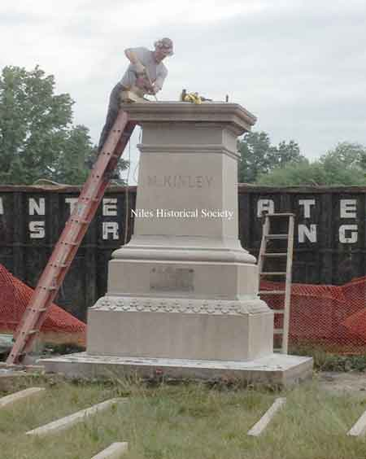
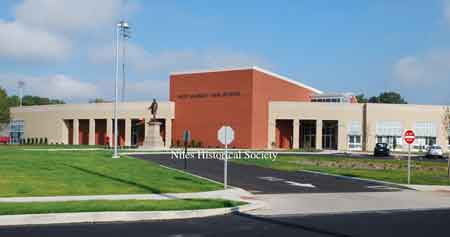

Ward-Thomas Museum


Niles William McKinley Statue
Ward — Thomas
Museum
Home of the Niles Historical Society
503 Brown Street Niles, Ohio 44446
Click here to become a Niles Historical Society Member or to renew your membership
Click on any photograph to view a larger image, click on image again to zoom into photograph.
| How
the William McKinley Statue Came to Niles McKinley High School. On the front lawn of Niles McKinley High School, a statue of our 25th President William McKinley reminds our young people of the moral and political character he possessed through out his lifetime. But few people know how this bronze statue became a Niles landmark. In 1902, a sculptor in Berlin, Germany, announced in a newspaper article that James C. Duke, a millionaire in the tobacco industry, had commissioned him to sculpt a bronze monument of William McKinley to be placed in Niles. At that time, Mayor Boynton advised Niles he knew nothing about the matter other than what he had read in the newspaper. Boynton was inclined to discredit the story. Apparently it was a false rumor for the statue didn’t arrive in Niles until 58 years later. The front entrance limestone lintel that spanned to original Niles High School , built in 1914 on Church Street, was placed in front of the William McKinley Statue after 2003. The old Niles McKinley School was demolished in 2003 and retirement apartments, Edison Place, are now located on that site. In 1957 the Niles McKinley High School was dedicated and the old Niles High School was renamed as Edison Junior High School. |
||
| |
||
| James Duke, a close friend of William McKinley, had the statue cast in Florence, Italy, in 1904 and it stood on the grounds of the Duke Estate in Hillsborough, N.J., until after his death. When James Duke’s estate was settled, heiress and daughter Doris Duke donated the statue to the city of Niles and even agreed to pay for the dismantling, shipping and reassembling of the statue. The only financial responsibility Niles would have would be the cost of transporting it from the railroad station to an erection site. When the seven-foot tall statue and its 16-foot high marble and granite base arrived at the Pennsylvania Railroad Station, the city officials were bewildered as to what could and should be done. Hence, the statue laid in the railroad yard for two years before the matter was resolved. PO1.1209 |
||
| |
||
During September 1962, an editorial appeared in the Niles Daily Times calling the public’s attention to the situation regarding the McKinley statue that had been left to deteriorate in the railroad yard. The editorial appealed to Niles residents for support and contributions to enable the placing of the statue in a more dignified environment. The editorial also asked for volunteers: A trucker to haul the statue; a contractor with a crane to load and unload the statue; an engineer to calculate the amount and type of materials, needed for the project; a cement contractor to donate the cement for the foundation; and men to build the forms and pour the cement. The following day the newspaper carried an article entitled, “Is Civic Pride Worth a Dollar?” To set this suggestion in motion, each of the 12 members of the Daily Times news staff contributed a dollar. On Friday, September 28, a ground-breaking ceremony was held at the high school. That same day, former Mayor Thomas R. Smith donated $50.00 to the project with the comment, “If every family in Niles would contribute one dollar, the goal could be met easily.” Governor DeSalle, who was in Niles for a speaking engagement, also donated to the statue fund. Schools Superintendent Marcus McEvoy was very enthusiastic about placing the McKinley statue on the front lawn of the high school and he assisted Mayor Smith in the fund raising efforts. The construction and industrial companies who volunteered equipment, materials and other services for the erection-of the 20-ton statue included Holly Construction Company, DeMatthews and Sons Construction Company, Valley Steel Erectors, Niles Fuel & Supply, Swab Block & Stone Company and Republic Steel Corp. Thurman Wilson of Holly Construction, Ben DeMatthews of DeMatthews & Sons, and Frank Comparato of Valley Steel Erectors supervised the setting of the monument. At that time, it was estimated it would take three weeks to complete this project. But thanks to the strong cooperation of the Niles industries, the project was completed sooner. On Wednesday, October 3, the world was applauding the multiple-orbit flight of Wally Schirra. But here in Niles, people were concentrating on the dedication of the statue of William McKinley. The plaque on the base of the statue reads, “Donated to the people of Niles by Doris Duke during the term of Mayor Thomas R. Smith, 1960-1962.” Interestingly, although residents of the city, the Niles Fire Department and Governor DeSalle rallied to the cause, the actual dedication ceremony was not covered by the newspaper until October 18, 1962. |
||
| |
||
 |
When the old Niles McKinley High School was demolished in 2013, the statue was refurbished and placed in storage. The marble surfaces had the stains removed and cleaned. The brass statue was polished before being placed on the original pedestal. Pictured is a workman preparing the base to be disassembled prior to removal. |
 The renovated William McKinley brass statue and marble base now stands at the main entrance to the new Niles McKinley High School. |
|
|
||
{kind=link}
{kind=link}
{kind=link}
{kind=link}